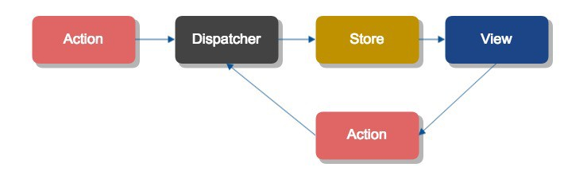

React专题分享
董浩
微博:freeeeaker
qq:437270544
github:https://github.com/freeeeaker
本次演讲主要分为三个部分
- 基础:包含一些ES6,webpack
- 入门:react的jsx语法，生命周期函数，组件间通信
- 中级:redux,react-router
ES6
ES6是下一代js规范，虽然ES6目前还有很多兼容性问题，但是你可以通过babel将其转换成浏览器支持的ES5代码。
ES6提供了一些新的方法和属性，现在很多框架都支持或者只支持ES6写法，所以建议大家还是尽快拥抱ES6
目前学习ES6的最好文档就是阮一峰的ES6教程
由于ES6加入了很多新特性，有些地方我们并不会用到，所以我在此介绍一下我们常用的一些
- 箭头函数
- 模块机制import,export
- 类，class
- 解构赋值
- 新的函数特性,默认参数,bind
- 新的对象特性，扩展运算符，assign
- 模板字符串
- 修饰符decorator
用webpack快速搭建一个react环境
webpack是现在一款非常火的模块加载器兼打包工具，它能把各种资源，例如JS、css、图片都当做一个模块来使用。由于React使用了新的语法jsx，所以我们需要用webpack将其转换为浏览器能识别的js。webpack和react联系的很紧密。
webpack的配置可以分为生产环境和开发环境。开发环境侧重于调试，生产环境侧重于性能优化，现在我们简单的来配置一个生产环境的webpack。
webpack的配置主要有这几个大项目
- entry: js 入口源文件
- output: 生成文件
- module: 配置各种loaders
- resolve: 文件路径的指向
- plugins: 插件，可以使用webpack更多的api
如何配置webpack
- 初始化项目，npm init --yes
- 下载webpack
- 配置entry,output
- 配置loaders，常用的loaders有css,style,less,url,file,babel
- babel的配置是用来转换react和es6语法的，它的配置我们可以写在.babelrc中
- 配置resolve的extensios，取消后缀名
- 开启devtool的sourcemap
- 插件有很多，webpack自带也有插件。一般常用的有,html-webpack-plugin,clean-webpack-plugin,hotMouleReplacementPlugin...
如何配置webpack-dev-server
- 配置入口，'webpack-dev-server/client?http://localhost:8081','webpack/hot/only-dev-server'
- 配置devServer选项，port,inline,historyApiFallback,stat,hot
- 配置插件 webpack.HotModuleReplacementPlugin
- ps: module.hot.accept()
jsx语法,lesson1
在render方法中我们可以返回一个HTML结构或者react组件，但是它必须只能有一个顶层标签
利用 JSX 编写 DOM 结构，可以用原生的 HTML 标签，也可以直接像普通标签一样引用 React 组件。这两者约定通过大小写来区分，小写的字符串是 HTML 标签，大写开头的变量是 React 组件
HTML 里的 class 在 JSX 里要写成 className，因为 class 在 JS 里是保留关键字。同理某些属性比如 for 要写成 htmlFor。
jsx允许在标签中使用js，但你需要用一个大括号包起来。JSX 允许直接在模板插入 JavaScript 变量。如果这个变量是一个数组，则会展开这个数组的所有成员基本上。但是最终返回的值必须是react组件，null或者undefined
我们可以在组件上传递值，这个值可以是任何js数据类型。但是，除了字符串(模板字符串除外)，你都需要使用大括号包裹起来
我们也可以在一个react组件中嵌套另一个react组件
状态机,lesson2
React 的一大创新，就是将组件看成是一个状态机，一开始有一个初始状态，然后用户互动，导致状态变化，从而触发重新渲染 UI
组件获取数据有两种方式，一种是props，来自于外面传递，不可改变,还有一种是state，我们可以改变它
但是我们不要直接改变state，而是创建一个新的state来替换掉原来的state
也就是如果我们想改变state中的某个值，不要直接操作它，而是通过setState来替换。替换自后react会自动重新渲染。要注意的是这一步是一个异步操作。
事件,lesson3
react自己把原生事件封装了一下，因此避免了一些兼容性问题
我们可以通过e.nativeEvent访问原生事件
我们也可以通过e.target获取当前目标元素
react事件列表，传送门
表单组件,lesson4
react的表单组件和原生组件有点区别，一般分为受控组件和非受控组件
顾名思义，受控组件就是行为受到控制。在给表单组件例如Input设置了默认值value后，那么不管你再怎么输入，状态都不会再改变。要想改变状态，我们必须通过onChange事件通过修改state来改变
非受控组件的value没有值或者为null，如果想给其赋上默认值，可以通过defalutValue，对于input[type='checkbox']则可以是defaultChecked
另外，我们可以通过给元素指定ref 来通过this.refs 来找到所要获取的元素
阮一峰的react入门教程，传送门
生命周期函数,lesson6
实例化
首次实例化- getDefaultProps
- getInitialState
- componentWillMount
- render
- componentDidMount
存在期
组件已存在时的状态改变- componentWillReceiveProps
- shouldComponentUpdate
- componentWillUpdate
- render
- componentDidUpdate
销毁&清理期
组件间通信lesson7
父组件=>子组件,子组件=>父组件,兄弟组件=>兄弟组件
子组件=>父组件，兄弟组件=>兄弟组件 一般通过回调的方式来进行通信
还可以通过EventEmitter或者context
Redux
facebook提出了一种新的有别于MVC的架构思想，flux。并基于此，推出了一个flux库。但是这个库并不是很完善，因此有很多人也基于flux思想推出了自己的库。而redux就是一个使用广泛的库。

redux与react-redux,lesson8
Redux包含如下方法，createStore、combineReducers、bindActionCreators、compose、applyMiddleware
Redux其实是一个独立的库，它可以和react结合用，也可以和别的框架组合。与react结合使用的时候我们需要引入一个react-redux。它有两个方法，provider和connect。
redux-thunk,lesson9
redux要求reducer必须是一个纯函数，但是我们在与服务器交互时，这是一个异步的过程，这样就不能保证reducer是一个纯函数
此时我们需要引入一个中间价，redux-thunk
react-router
react-router也是以组件的形式，最外层是一个Router，接收一个history
Router的component 属性接收一个react组件，path匹配路径，我们可以通过:params的方式匹配动态的路由
路由的各个属性可以在this.props上看到
异步加载
在面对一个单页面应用的时候，假如我们进入首页，我们其实是不需要加载首页之外的内容的，所以我们可以动态加载，进入某个页面再去加载相应的内容
react提供了一个getComponents方法让我们异步加载，除此之外我们还需要配合webpack的代码分割,code splitting
webpack的异步加载有两种方法,一种是require.ensure([],(require)=>require(''))
还有一种是webpack的bundle-loader
推荐使用bundle-loader
尾声
本来还打算在讲讲react的动画，性能优化，以及一点函数式编程，但是一来讲了很多了，怕同学们消化不了，二来我自己目前也正在琢磨中，不是很成熟
以后有机会还可以再给大家分享
谢谢大家的倾听！